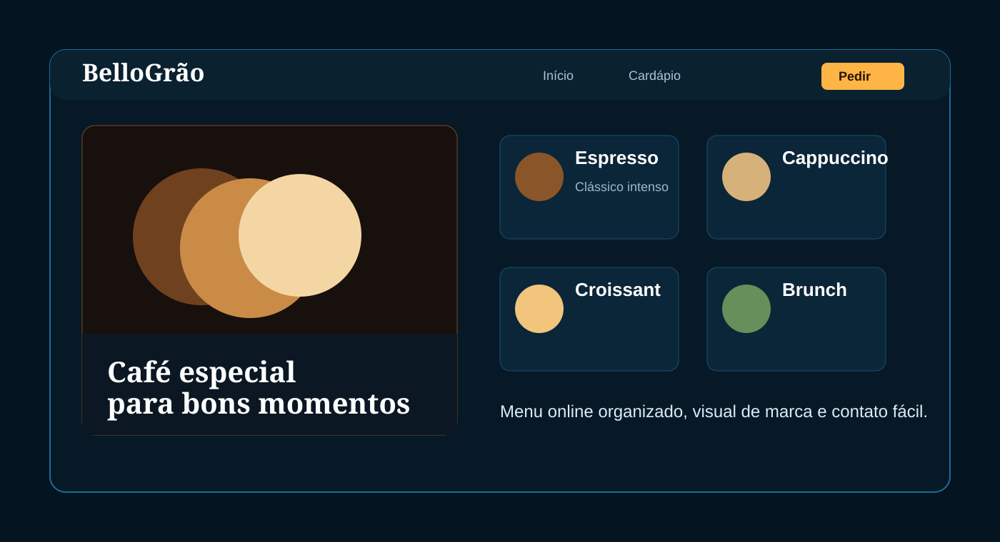

O desafio
Pequenos negócios precisam apresentar produtos, horários, diferenciais e canais de contato de forma rápida, principalmente para clientes que chegam pelo celular.
Site institucional para cafeteria, com presença digital elegante, cardápio online e caminho claro para o cliente conhecer a marca e fazer contato.

Pequenos negócios precisam apresentar produtos, horários, diferenciais e canais de contato de forma rápida, principalmente para clientes que chegam pelo celular.
Uma landing page responsiva com identidade visual acolhedora, vitrine de produtos, cardápio online e chamadas diretas para contato e visita.
Mais clareza para o cliente, menos perguntas repetidas no atendimento e uma experiência simples para transformar interesse em pedido ou visita.